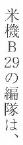
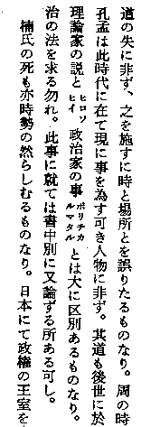
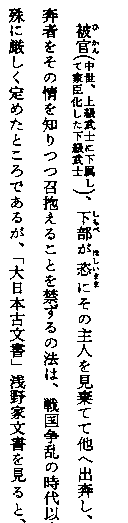
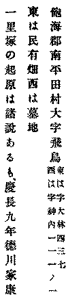
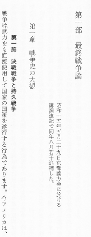
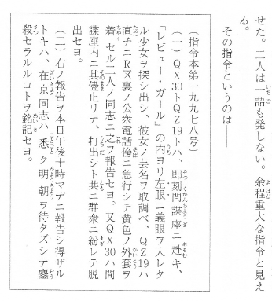
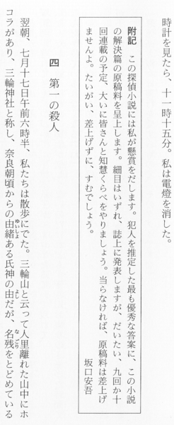
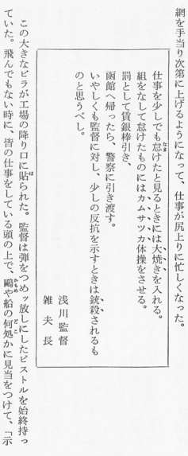
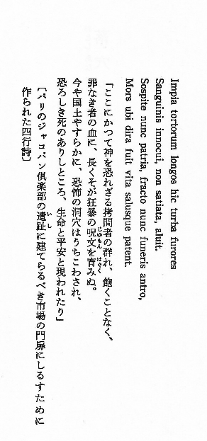
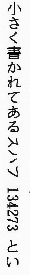

その他
訂正と「ママ」
底本の語句の横に、ルビのようにそえられた「ママ」は、本作りのもとにした書籍や新聞、雑誌、手書き原稿などの表記が疑わしいけれど、訂正はせず、「そのままにした」ことを表しています。
「ママ」のつけられている箇所は、次のように入力してください。
※記入例の下に、テキスト版をスクリプトで変換して得た、XHTML 版のタグを示します。
吹喋［＃「喋」に「ママ」の注記］
吹<ruby><rb>喋</rb><rp>（</rp><rt>ママ</rt><rp>）</rp></ruby>
※ルビとして、タグ付けします。
底本の表記が明らかに誤っていると思われる場合は、その箇所を訂正した上で、以下の書式で、修正を加えた旨を注記してください。
訂正範囲は、文節単位としてください。（「文節」に関しては、ウィキペディアの記述を参考にしてください。）
紋附だとか［＃「紋附だとか」は底本では「絞附だとか」］
紋附だとか<span class="notes">［＃「紋附だとか」は底本では「絞附だとか」］</span>
ルビを訂正する際は、次のように書いてください。
私は籠《ざる》［＃ルビの「ざる」は底本では「さる」］をさげ
私は<ruby><rb>籠</rb><rp>（</rp><rt>ざる</rt><rp>）</rp></ruby><span class="notes">［＃ルビの「ざる」は底本では「さる」］</span>をさげ
底本の表記が疑わしいけれど、正しい形を特定できない場合は、「ママ」を用いて、次のように書いてください。
広場へに［＃「広場へに」はママ］店でもだそう。
広場へに<span class="notes">［＃「広場へに」はママ］</span>店でもだそう。
ルビに対してママ注記を行うときは、次のように書いてください。
お湯《ゆう》［＃ルビの「ゆう」はママ］
お<ruby><rb>湯</rb><rp>（</rp><rt>ゆう</rt><rp>）</rp></ruby><span class="notes">［＃ルビの「ゆう」はママ］</span>
ルビとルビのように付く文字
ルビは、「《 》」を用いて、次のように書きます。
青空文庫《あおぞらぶんこ》
<ruby><rb>青空文庫</rb><rp>（</rp><rt>あおぞらぶんこ</rt><rp>）</rp></ruby>
ルビの付く文字が、漢字と仮名、仮名とアルファベット、平仮名と片仮名のように、異なった文字種によって構成されているときは、先頭に「｜」を入れて範囲を特定してください。
霧の｜ロンドン警視庁《スコットランドヤード》
霧の<ruby><rb>ロンドン警視庁</rb><rp>（</rp><rt>スコットランドヤード</rt><rp>）</rp></ruby>
ルビのかかる文字が、漢字、平仮名、片仮名、アルファベットなど、一つの文字種のみからなるときは、「｜」はいりません。（平仮名と片仮名は、別の文字種とみなします。）
「仝々〆〇ヶ」の５文字はJIS漢字コードの規格票では漢字に分類されていませんが、青空文庫の入力では特に、漢字扱いとし、「｜」なしで次のように入力します。
〆切《しめきり》を逃れるために、市ヶ谷《いちがや》から転々《てんてん》と、居を移した。
<ruby><rb>〆切</rb><rp>（</rp><rt>しめきり</rt><rp>）</rp></ruby>を逃れるために、<ruby><rb>市ヶ谷</rb><rp>（</rp><rt>いちがや</rt><rp>）</rp></ruby>から<ruby><rb>転々</rb><rp>（</rp><rt>てんてん</rt><rp>）</rp></ruby>と、居を移した。
外字注記の入った漢字文字列にルビを注記する際は、「｜」を用いる必要はありません。
…水鉢を置いた※［＃「木＋靈」、第3水準1-86-29］子窓《れんじまど》の下には…
…水鉢を置いた<ruby><rb><img src="../../../gaiji/1-86/1-86-29.png" alt="※(「木＋靈」、第3水準1-86-29)" class="gaiji" />子窓</rb><rp>（</rp><rt>れんじまど</rt><rp>）</rp></ruby>の下には…<br />
アクセント分解された欧文文字列にルビを注記する際も、「｜」を用いる必要はありません。
それが彼の 〔E'tude〕《エチュード》 だった。
それが彼の <ruby><rb><img src="../../../gaiji/1-09/1-09-32.png" alt="※(アキュートアクセント付きE)" class="gaiji" />tude</rb><rp>（</rp><rt>エチュード</rt><rp>）</rp></ruby> だった。<br />
「｜」の使い方の詳細は、青空文庫工作員マニュアルの【ルビ】の項を参照してください。
ルビが文字の左にかかるときは、注記形式で、次のように書いてください。
青空文庫［＃「青空文庫」の左に「あおぞらぶんこ」のルビ］
青空文庫<span class="notes">［＃「青空文庫」の左に「あおぞらぶんこ」のルビ］</span>
ルビの付く文字が長めの場合や、外字注記が用いられているとき、前方参照型では期待通りに変換されない場合は、始まりと終わりを特定する、次のような開始／終了型で注記してください。
［＃左にルビ付き］※［＃「木＋靈」、第3水準1-86-29］子窓［＃左に「れんじまど」のルビ付き終わり］
<span class="notes">［＃左にルビ付き］</span><img src="../../../gaiji/1-86/1-86-29.png" alt="※(「木＋靈」、第3水準1-86-29)" class="gaiji" />子窓<span class="notes">［＃左に「れんじまど」のルビ付き終わり］</span>
ルビが文字の左右に付いているときは、記号と注記を組み合わせてください。
青空文庫《あおぞらぶんこ》［＃「青空文庫」の左に「aozora bunko」のルビ］
<ruby><rb>青空文庫</rb><rp>（</rp><rt>あおぞらぶんこ</rt><rp>）</rp></ruby><span class="notes">［＃「青空文庫」の左に「aozora bunko」のルビ］</span>
左に付くルビを注記するときは、ルビのかかる文字（上の例では「青空文庫《あおぞらぶんこ》」ではなく「青空文庫」）のみを注記対象として指定してください。
疑問のある箇所に、底本がルビのような形でママなどと添えている場合は、すでに述べた通り、次の形で注記してください。
大空文庫［＃「大空文庫」に「ママ」の注記］
<ruby><rb>大空文庫</rb><rp>（</rp><rt>ママ</rt><rp>）</rp></ruby>
ママなどの注記が対象文字の左に付いているときは、次のように書いてください。
大空文庫［＃「大空文庫」の左に「ママ」の注記］
大空文庫<span class="notes">［＃「大空文庫」の左に「ママ」の注記］</span>
ルビの付く文字が長めの場合や、外字注記が用いられているとき、前方参照型では期待通りに変換されない場合は、始まりと終わりを特定する、次のような開始／終了型で注記してください。
［＃注記付き］名※［＃二の字点、1-2-22］［＃「（銘々）」の注記付き終わり］
<ruby><rb>名<img src="../../../gaiji/1-02/1-02-22.png" alt="※(二の字点、1-2-22)" class="gaiji" /></rb><rp>（</rp><rt>（銘々）</rt><rp>）</rp></ruby>
［＃注記付き］勝安房守［＃「本ト麟太郎※［＃コト、1-2-24］」の注記付き終わり］
<ruby><rb>勝安房守</rb><rp>（</rp><rt>本ト麟太郎<img src="../../../gaiji/1-02/1-02-24.png" alt="※(コト、1-2-24)" class="gaiji" /></rt><rp>）</rp></ruby>
注記が文字の左にかかるときは、次のように書いてください。
［＃左に注記付き］名※［＃二の字点、1-2-22］［＃左に「（銘々）」の注記付き終わり］
<span class="notes">［＃左に注記付き］</span>名<img src="../../../gaiji/1-02/1-02-22.png" alt="※(二の字点、1-2-22)" class="gaiji" /><span class="notes">［＃左に「（銘々）」の注記付き終わり］</span>
［＃左に注記付き］勝安房守［＃左に「本ト麟太郎※［＃コト、1-2-24］」の注記付き終わり］
<span class="notes">［＃左に注記付き］</span>勝安房守<span class="notes">［＃左に「本ト麟太郎<img src="../../../gaiji/1-02/1-02-24.png" alt="※(コト、1-2-24)" class="gaiji" />」の注記付き終わり］</span>
対象文字の右にルビ、左にママの注記が付いているような場合は、次のように書いてください。
大空文庫《あおぞらぶんこ》［＃「大空文庫」の左に「ママ」の注記］
<ruby><rb>大空文庫</rb><rp>（</rp><rt>あおぞらぶんこ</rt><rp>）</rp></ruby><span class="notes">［＃「大空文庫」の左に「ママ」の注記］</span>
※2010年5月1日以降の公開分から使用する XHTML 変換スクリプトでは当初、complex-ruby の書式で、対象文字の左右に付くルビをタグ付けしました。ところが、ブラウザーの一部で、表示に大きな問題が出ることから、complex-ruby の採用を断念し、simple-ruby に戻しました。
縦組み中で横に並んだ文字
縦組み中で、横並びに組み込まれた文字に対しては、○○［＃「○○」は縦中横］と注記してください 。

記入例
米機Ｂ29［＃「29」は縦中横］の編隊は、
米機Ｂ<span dir="ltr">29</span>の編隊は、
●縦中横の例。海野十三「海野十三全集 別巻2 日記・書簡・雑纂」三一書房、1993（平成5）年1月31日第1版第1刷、12ページ
指定範囲に、外字注記が用いられている場合、前方参照型では期待通りに変換されない場合は、始まりと終わりを特定する開始／終了型で、次のように注記してください。
［＃縦中横］（※［＃ローマ数字1、1-13-21］）［＃縦中横終わり］
<span dir="ltr">（<img src="../../../gaiji/1-13/1-13-21.png" alt="※(ローマ数字1、1-13-21)" class="gaiji" />）</span>
割り注
本文の途中に、通常二行に渡って、小さな文字で組み込まれる注を、「割り注」と呼びます。
割り注が始まるところには、［＃割り注］と書いてください。
割り注が終わるところには、［＃割り注終わり］と書き込んでください。
※かつては［＃ここから割り注］〜［＃ここで割り注終わり］と書いていましたが、行中の注記の書式をそろえるために、変更しました。
割り注内の改行位置を書き込む必要は、原則としてありません。

▲３行目に、「ヒロソヒイ」と「ポリチカルマタル」が割り注で組み入れてあります。
記入例
…理論家の説と［＃割り注］ヒロソヒイ［＃割り注終わり］政治家の事［＃割り注］ポリチカルマタル［＃割り注終わり］とは大に区別あるものなり。…
…理論家の説と<span class="warichu">（ヒロソヒイ）</span>政治家の事<span class="warichu">（ポリチカルマタル）</span>とは大に区別あるものなり。…
●割り注の例。福沢諭吉「文明論之概略」岩波文庫、岩波書店、1974（昭和49）年3月30日第30刷、95ページ
※割り注の文字列を囲む、XHTML 中の丸括弧は、テキストからの変換プログラムが補っています。
割り注が丸括弧におさめられているときは、始め括弧と割り注のあいだに［＃割り注］と書き込み、割り注と終わり括弧の間に［＃割り注終わり］と書き込んでください。

▲冒頭の「被官《ひかん》」に、丸括弧付きで割り注が付けられています。
記入例
被官《ひかん》（［＃割り注］中世、上級武士に下属して家臣化した下級武士［＃割り注終わり］）、下部《しもべ》が恣《ほしいまま》にその主人を見棄てて他へ出奔し、…
<ruby><rb>被官</rb><rp>（</rp><rt>ひかん</rt><rp>）</rp></ruby>（<span class="warichu">中世、上級武士に下属して家臣化した下級武士</span>）、<ruby><rb>下部</rb><rp>（</rp><rt>しもべ</rt><rp>）</rp></ruby>が<ruby><rb>恣</rb><rp>（</rp><rt>ほしいまま</rt><rp>）</rp></ruby>にその主人を見棄てて他へ出奔し、…
●括弧に挟まれた割り注の例。穂積陳重「続法窓夜話」岩波文庫、岩波書店、1999（平成11）年9月16日第4刷、139ページ
※こうしたケースでは、丸括弧が重ならないように、スクリプトで調整しています。
割り注内で、成り行きによらない意図的な改行が行われている場合には、改行位置に［＃改行］と書き込んでください。

▲内容の切れ目で、割り注が改行されています。
記入例
飽海郡南平田村大字飛鳥［＃割り注］東は字大林四三七［＃改行］西は字神内一一一ノ一［＃割り注終わり］
飽海郡南平田村大字飛鳥<span class="warichu">（東は字大林四三七<span class="notes">［＃改行］</span>西は字神内一一一ノ一）</span>
●割り注内で意図的に改行されている例。「山形縣史蹟名勝天然紀念物調査報告（第二輯）」名著出版、1974（昭和49）年6月10日、66ページ
行右小書き、行左小書き文字（縦組み）
縦組み中で、行の右に小書きされた文字は、次のように注記してください。
それ以上である。（５）［＃「（５）」は行右小書き］
それ以上である。<sup class="superscript">（５）</sup>
縦組み中で、行の左に小書きされた文字は、次のように注記してください。
それ以上である。（５）［＃「（５）」は行左小書き］
それ以上である。<sub class="subscript">（５）</sub>
指定範囲に、外字注記が用いられているとき、前方参照型では期待通りに変換されない場合は、行右小書き、行左小書きとも、始まりと終わりを特定する開始／終了型で注記してください。
［＃行右小書き］※［＃丸1、1-13-1］［＃行右小書き終わり］
<sup class="superscript"><img src="../../../gaiji/1-13/1-13-01.png" alt="※(丸1、1-13-1)" class="gaiji" /></sup>
上付き小文字、下付き小文字（横組み）
横組みの数式や元素記号などにみられる、行の上や下に小書きされた文字は、次のように注記してください。
22［＃「2」は上付き小文字］
2<sup class="superscript">2</sup>
H2［＃「2」は下付き小文字］O
H<sub class="subscript">2</sub>O
指定範囲に、外字注記が用いられているとき、前方参照型では期待通りに変換されない場合は、上付き小文字、下付き小文字とも、始まりと終わりを特定する開始／終了型で注記してください。
［＃上付き小文字］※［＃丸1、1-13-1］［＃上付き小文字終わり］
<sup class="superscript"><img src="../../../gaiji/1-13/1-13-01.png" alt="※(丸1、1-13-1)" class="gaiji" /></sup>
字詰め
文字組みの天地が、特に短く設定してあるところは、次のように注記してください。
その箇所の１行前に、［＃ここから○字詰め］と書き込んでください。
○には、何字詰めになっているかを、全角のアラビア数字で書いてください。注記中の数字は、二桁になっても「１０」のように全角で入力してください。
特別な字詰めが終わったら、改行して［＃ここで字詰め終わり］と書いてください。
［＃ここから１０字詰め］
昭和十五年五月二十九日京都義方会に於ける講演速記で同年八月若干追補した。
［＃ここで字詰め終わり］
<div class="jizume_10" style="width: 10em">
昭和十五年五月二十九日京都義方会に於ける講演速記で同年八月若干追補した。<br />
</div>
字下げした上で、文字組みの天地が、短く設定してある場合は、次のように注記してください。
その箇所の前に、先ず［＃ここから○字下げ］と書き込んでください。
続いて行をあらため、［＃ここから●字詰め］と書いてください。
○、●には、全角のアラビア数字を用いてください。
字下げした上で、字詰め処理されているところが終わったら、改行して先ず、［＃ここで字詰め終わり］と書き込んでください。
続いて行をあらため、［＃ここで字下げ終わり］と書いてください。
注記を重複させる際は、入れ子（ネスティング）の形をとって、次のように書きます。（順をはっきり示すために、ここでは仮に行頭にあきを入れますが、実際の入力の際は、２、３に相当するところの行頭も、下げないでください。）
［１の注記］
［２の注記］
［３の注記］
………………………………………
［３終わり］
［２終わり］
［１終わり］

▲２行目と３行目が、20字詰めで組まれています。
記入例：
［＃１字下げ］第一部 最終戦争論［＃「第一部 最終戦争論」は大見出し］
［＃ここから１６字下げ］
［＃ここから２０字詰め］
昭和十五年五月二十九日京都義方会に於ける講演速記で同年八月若干追補した。
［＃ここで字詰め終わり］
［＃ここで字下げ終わり］
［＃３字下げ］第一章 戦争史の大観［＃「第一章 戦争史の大観」は中見出し］
［＃５字下げ］第一節 決戦戦争と持久戦争［＃「第一節 決戦戦争と持久戦争」は小見出し］
戦争は武力をも直接使用して国家の国策を遂行する行為であります。今アメリカは、…
<div class="jisage_1" style="margin-left: 1em"><h3 class="o-midashi"><a class="midashi_anchor" id="midashi1406">第一部 最終戦争論</a></h3></div>
<br />
<div class="jisage_16" style="margin-left: 16em">
<div class="jizume_20" style="width: 20em">
昭和十五年五月二十九日京都義方会に於ける講演速記で同年八月若干追補した。<br />
</div>
</div>
<br />
<div class="jisage_3" style="margin-left: 3em"><h4 class="naka-midashi"><a class="midashi_anchor" id="midashi1416">第一章 戦争史の大観</a></h4></div>
<br />
<div class="jisage_5" style="margin-left: 5em"><h5 class="ko-midashi"><a class="midashi_anchor" id="midashi1417">第一節 決戦戦争と持久戦争</a></h5></div>
戦争は武力をも直接使用して国家の国策を遂行する行為であります。今アメリカは、…
●字詰め注記の例。「最終戦争論・戦争史大観」中公文庫、中央公論社、1997（平成9）年5月20日6版、11ページ
罫囲み
罫囲みは、次のように注記してください。
罫囲みされたブロックの１行前に、［＃ここから罫囲み］と書き込んでください。
ブロックが終わったら、改行して［＃ここで罫囲み終わり］と書いてください。

▲天地ともにあきなく、文字の組まれたスペースいっぱいに罫囲みされています。
記入例：
その指令というのは――
［＃ここから罫囲み］
（指令本第一九九七八号）
（一）ＱＸ30［＃「30」は縦中横］トＱＺ19［＃「19」は縦中横］トハ、即刻《そっこく》間諜座《かんちょうざ》ニ赴《おもむ》キ、「レビュー・ガール」の内《うち》ヨリ左眼［＃「左眼」に丸傍点］ニ義眼ヲ入レタル少女ヲ探シ出シ、彼女ノ芸名ヲ取調ベ、ＱＺ19［＃「19」は縦中横］ハ直《ただ》チニＲ区裏ノ公衆電話｜傍《そば》ニ急行シテ黄色ノ外套《がいとう》ヲ着《ちゃく》セル二人ノ同志ニ之《これ》ヲ報告セヨ。又ＱＸ30［＃「30」は縦中横］ハ間諜座内ニ其儘《そのまま》止リテ、打出《うちだ》シト共《とも》ニ群衆ニ紛《まぎ》レテ脱出セヨ。
（二）右ノ報告ヲ本日午後十時マデニ報告シ得ザルトキハ、在京《ざいきょう》同志ハ悉《ことごと》ク明朝《みょうちょう》ヲ待タズシテ鏖殺《おうさつ》セラルルコトヲ銘記《めいき》セヨ。
［＃ここで罫囲み終わり］
その指令というのは――<br />
<div class="keigakomi" style="border: solid 1px">
（指令本第一九九七八号）<br />
（一）ＱＸ<span dir="ltr">30</span>トＱＺ<span dir="ltr">19</span>トハ、<ruby><rb>即刻</rb><rp>（</rp><rt>そっこく</rt><rp>）</rp></ruby><ruby><rb>間諜座</rb><rp>（</rp><rt>かんちょうざ</rt><rp>）</rp></ruby>ニ<ruby><rb>赴</rb><rp>（</rp><rt>おもむ</rt><rp>）</rp></ruby>キ、「レビュー・ガール」の<ruby><rb>内</rb><rp>（</rp><rt>うち</rt><rp>）</rp></ruby>ヨリ<em class="black_circle">左眼</em>ニ義眼ヲ入レタル少女ヲ探シ出シ、彼女ノ芸名ヲ取調ベ、ＱＺ<span dir="ltr">19</span>ハ<ruby><rb>直</rb><rp>（</rp><rt>ただ</rt><rp>）</rp></ruby>チニＲ区裏ノ公衆電話<ruby><rb>傍</rb><rp>（</rp><rt>そば</rt><rp>）</rp></ruby>ニ急行シテ黄色ノ<ruby><rb>外套</rb><rp>（</rp><rt>がいとう</rt><rp>）</rp></ruby>ヲ<ruby><rb>着</rb><rp>（</rp><rt>ちゃく</rt><rp>）</rp></ruby>セル二人ノ同志ニ<ruby><rb>之</rb><rp>（</rp><rt>これ</rt><rp>）</rp></ruby>ヲ報告セヨ。又ＱＸ<span dir="ltr">30</span>ハ間諜座内ニ<ruby><rb>其儘</rb><rp>（</rp><rt>そのまま</rt><rp>）</rp></ruby>止リテ、<ruby><rb>打出</rb><rp>（</rp><rt>うちだ</rt><rp>）</rp></ruby>シト<ruby><rb>共</rb><rp>（</rp><rt>とも</rt><rp>）</rp></ruby>ニ群衆ニ<ruby><rb>紛</rb><rp>（</rp><rt>まぎ</rt><rp>）</rp></ruby>レテ脱出セヨ。<br />
（二）右ノ報告ヲ本日午後十時マデニ報告シ得ザルトキハ、<ruby><rb>在京</rb><rp>（</rp><rt>ざいきょう</rt><rp>）</rp></ruby>同志ハ<ruby><rb>悉</rb><rp>（</rp><rt>ことごと</rt><rp>）</rp></ruby>ク<ruby><rb>明朝</rb><rp>（</rp><rt>みょうちょう</rt><rp>）</rp></ruby>ヲ待タズシテ<ruby><rb>鏖殺</rb><rp>（</rp><rt>おうさつ</rt><rp>）</rp></ruby>セラルルコトヲ<ruby><rb>銘記</rb><rp>（</rp><rt>めいき</rt><rp>）</rp></ruby>セヨ。<br />
</div>
●罫囲み注記の例1。「海野十三全集 第2巻 俘囚」三一書房、1991（平成3）年2月28日第1版第1刷、55ページ
罫囲みが字下げしてある場合は、次のように注記してください。
ブロックの１行前に、まず［＃ここから○字下げ］と書き込んでください。
続いて行をあらため、［＃ここから罫囲み］と書いてください。
字下げされた罫囲みが終わったら、ネスティングの要領で、先ず、［＃ここで罫囲み終わり］、続いて行をあらためて、［＃ここで字下げ終わり］と書いてください。

▲１字下げて、罫囲みされています。
記入例：
［＃ここから１字下げ］
［＃ここから罫囲み］
附記［＃「附記」は太字］ この探偵小説には私が懸賞をだします。犯人を推定した最も優秀な答案に、この小説の解決篇の原稿料を呈上します。細目はいずれ、誌上に発表しますが、だいたい、九回か十回連載の予定、大いに皆さんと知恵くらべをやりましょう。当らなければ、原稿料は差上げませんよ。たいがい、差上げずに、すむでしょう。［＃地から１字上げ］坂口安吾
［＃ここで罫囲み終わり］
［＃ここで字下げ終わり］
<div class="jisage_1" style="margin-left: 1em">
<div class="keigakomi" style="border: solid 1px">
<span class="futoji">附記</span> この探偵小説には私が懸賞をだします。犯人を推定した最も優秀な答案に、この小説の解決篇の原稿料を呈上します。細目はいずれ、誌上に発表しますが、だいたい、九回か十回連載の予定、大いに皆さんと知恵くらべをやりましょう。当らなければ、原稿料は差上げませんよ。たいがい、差上げずに、すむでしょう。<div class="chitsuki_1" style="text-align:right; margin-right: 1em">坂口安吾</div>
</div>
</div>
●罫囲み注記の例2。坂口安吾「不連続殺人事件」「坂口安吾全集11」ちくま文庫、筑摩書房、1990（平成2）年7月31日第1刷発行、41ページ
字下げされた罫囲みの中で、字詰めが指定されている場合は、次の順で注記してください。
まず［＃ここから○字下げ］、改行して［＃ここから●字詰め］、改行して［＃ここから罫囲み］と書き込んでください。
ブロックが終わったら、改行して、ネスティングの要領で、［＃ここで罫囲み終わり］改行、［＃ここで字詰め終わり］改行、［＃ここで字下げ終わり］と書いてください。

▲４字下げて、２８字詰めで罫囲みされています。
記入例：
［＃ここから４字下げ］
［＃ここから２８字詰め］
［＃ここから罫囲み］
仕事を少しでも怠《なま》けたと見るときには大焼き［＃「大焼き」に傍点］を入れる。
組をなして怠けたものにはカムサツカ［＃「カムサツカ」に傍点］体操をさせる。
罰として賃銀棒引き、
函館へ帰ったら、警察に引き渡す。
いやしくも監督に対し、少しの反抗を示すときは銃殺［＃「銃殺」に傍点］されるものと思うべし。
浅川監督
雑夫長
［＃ここで罫囲み終わり］
［＃ここで字詰め終わり］
［＃ここで字下げ終わり］
<div class="jisage_4" style="margin-left: 4em">
<div class="jizume_28" style="width: 28em">
<div class="keigakomi" style="border: solid 1px">
仕事を少しでも<ruby><rb>怠</rb><rp>（</rp><rt>なま</rt><rp>）</rp></ruby>けたと見るときには<em class="sesame_dot">大焼き</em>を入れる。<br />
組をなして怠けたものには<em class="sesame_dot">カムサツカ</em>体操をさせる。<br />
罰として賃銀棒引き、<br />
函館へ帰ったら、警察に引き渡す。<br />
いやしくも監督に対し、少しの反抗を示すときは<em class="sesame_dot">銃殺</em>されるものと思うべし。<br />
浅川監督<br />
雑夫長<br />
</div>
</div>
</div>
●罫囲み注記の例1。小林多喜二「蟹工船」「蟹工船・党生活者」新潮文庫、新潮社、1998（平成10）年1月10日89版、90ページ
※青空文庫で使用する、テキスト版を XHTML 版に変換するプログラムは、この例の注記を、「４字下げ」、「２８字詰めを確保」、「罫囲み」とタグ付けします。その結果、ウェッブブラウザー上では、底本の２８字詰めから罫囲みの天地２字分が食われて、２６字詰めで表示されることになります。
かつては、罫囲みの中で文字が折り返さない場合は、けい線素片を用いて、次のように表現してきました。
┌────────────────────┐
│ 面目無い │
│ │
│ Ｓ先生と酒を飲んだのも僕だ │
│ 生れかわって遣り直す │
│ 忰と嫁の将来を頼む │
│ 二十日午後一時 Ｍより │
│ Ｗ兄 足下 │
└────────────────────┘
けれど、プロポーショナル・フォントを用いた環境では、組み体裁が乱れることから、この方式は、用いないことにします。
行中の文字が罫囲みされている場合は、○○［＃「○○」は罫囲み］と書いてください。
そしてキ劇の［＃「キ劇の」は罫囲み］犠牲になるようなことは
そして<span class="keigakomi">キ劇の</span>犠牲になるようなことは
対象文字が長めの場合や、外字注記が用いられているとき、前方参照型では期待通りに変換されない場合は、始まりと終わりを特定する開始／終了型で、次のように注記してください。
［＃罫囲み］この探偵小説には私が懸賞をだします。犯人を推定した最も優秀な答案に、この小説の解決篇の原稿料を呈上します。［＃罫囲み終わり］
<span class="keigakomi">この探偵小説には私が懸賞をだします。犯人を推定した最も優秀な答案に、この小説の解決篇の原稿料を呈上します。</span>
横組み
横組みの底本
横組みの底本から入力した際は、ファイル末に「※底本は横組みです。」と記載してください。
書き込む位置は、「収録ファイルへの記載事項」の記載例にならってください。
縦組み本文中の横組み
縦組み中に、横組みされたブロックが組み込まれている際は、１行前に［＃ここから横組み］、１行後に［＃ここで横組み終わり］と書き込んでください。
記入例：
［＃ここから３字下げ］
［＃ここから横組み］
手持現金旧券＋（新円100円×家族人数）＋500円以内の給料＋300円＋（100×Ｘ）
［＃ここで横組み終わり］
［＃ここで字下げ終わり］
<div class="jisage_3" style="margin-left: 3em">
<div class="yokogumi">
手持現金旧券＋（新円100円×家族人数）＋500円以内の給料＋300円＋（100×Ｘ）<br />
</div>
</div>
●ブロックで横組みされている例。宮本百合子「私たちの建設」角川文庫、角川書店、1976（昭和51）年11月30日、120ページ
ただし、横組みのブロックが、1バイト（半角）のアルファベット、数字、記号で入力すべき文字からなる場合は、注記はいりません。

記入例：
［＃ここから９字下げ］
Impia tortorum longos hic turba furores
Sanguinis innocui, non satiata, aluit.
Sospite nunc patria, fracto nunc funeris antro,
Mors ubi dira fuit vita salusque patent.
「ここにかつて神を恐れざる拷問者の群れ、飽くことなく、
罪なき者の血に、長くそが狂暴の呪文《じゅもん》を育《はぐく》みぬ。
今や国土やすらかに、恐怖の洞穴はうちこわされ、
恐ろしき死のありしところ、生命と平安と現われたり」
［＃ここから１０字下げ］
〔パリのジャコバン倶楽部の遺趾《いし》に建てらるべき市場の門扉にしるすために作られた四行詩〕
［＃ここで字下げ終わり］
<div class="jisage_9" style="margin-left: 9em">
Impia tortorum longos hic turba furores<br />
Sanguinis innocui, non satiata, aluit.<br />
Sospite nunc patria, fracto nunc funeris antro,<br />
Mors ubi dira fuit vita salusque patent.<br />
「ここにかつて神を恐れざる拷問者の群れ、飽くことなく、<br />
罪なき者の血に、長くそが狂暴の<ruby><rb>呪文</rb><rp>（</rp><rt>じゅもん</rt><rp>）</rp></ruby>を<ruby><rb>育</rb><rp>（</rp><rt>はぐく</rt><rp>）</rp></ruby>みぬ。<br />
今や国土やすらかに、恐怖の洞穴はうちこわされ、<br />
恐ろしき死のありしところ、生命と平安と現われたり」<br />
</div><div class="jisage_10" style="margin-left: 10em">
〔パリのジャコバン倶楽部の<ruby><rb>遺趾</rb><rp>（</rp><rt>いし</rt><rp>）</rp></ruby>に建てらるべき市場の門扉にしるすために作られた四行詩〕<br />
</div>
●横組み注記のいらない例。ポー、佐々木直次郎訳「モルグ街の殺人事件」新潮文庫、新潮社、1998（平成10）年12月25日78刷、64ページ
1バイトの欧文がクォーテーション・マークで囲まれているケースでは、シングルクォートを2バイトの「‘」（左シングル引用符、1-38）と「’」（右シングル引用符、1-39）、ダブルクォートを2バイトの「“」（左ダブル引用符、1-40）と「”」（右ダブル引用符、1-41）で入力します。
2バイトの「‘」と「’」、「“」と「”」で、1バイトの欧文を囲む場合は、ブロックの全体を、横組み注記してください。
［＃ここから横組み］
［＃ここから１字下げ］
“〔Die Humanita:t erst bringt klarheit u:ber die Menschenwelt, und von da aus auch u:ber die Go:tterwelt〕”
［＃ここで字下げ終わり］
［＃地から１字上げ］―H.Cohen
［＃ここで横組み終わり］
<div class="yokogumi">
<div class="jisage_1" style="margin-left: 1em">
“Die Humanit<img src="../../../gaiji/1-09/1-09-58.png" alt="※(ダイエレシス付きA小文字)" class="gaiji" />t erst bringt klarheit <img src="../../../gaiji/1-09/1-09-81.png" alt="※(ダイエレシス付きU小文字)" class="gaiji" />ber die Menschenwelt, und von da aus auch <img src="../../../gaiji/1-09/1-09-81.png" alt="※(ダイエレシス付きU小文字)" class="gaiji" />ber die G<img src="../../../gaiji/1-09/1-09-76.png" alt="※(ダイエレシス付きO小文字)" class="gaiji" />tterwelt”<br />
</div>
<div class="chitsuki_1" style="text-align:right; margin-right: 1em">―H.Cohen</div>
</div>
行中の文字を横組み注記する際は、○○［＃「○○」は横組み］と書いてください。

記入例：
…小さく書かれてあるスハフ［＃「スハフ」は横組み］ 134273 とい…
…小さく書かれてある<span class="yokogumi">スハフ</span> 134273 とい…
●行中の横組み注記例1。太宰治「私たちの建設」「晩年」新潮文庫、新潮社、1999（平成11）年6月25日105刷、85ページ
対象文字が長めの場合や、外字注記が用いられているとき、前方参照型では期待通りに変換されない場合は、始まりと終わりを特定する開始／終了型で、次のように注記してください。
それからいきおいよく書きまくった。［＃横組み］Zenzo Kasai, one of the most unfortunate Japanese novelists at present, said,“［＃横組み終わり］――葛西《かさい》善蔵は、そのころまだ生きていた。
それからいきおいよく書きまくった。<span class="yokogumi">Zenzo Kasai, one of the most unfortunate Japanese novelists at present, said,“</span>――<ruby><rb>葛西</rb><rp>（</rp><rt>かさい</rt><rp>）</rp></ruby>善蔵は、そのころまだ生きていた。
行中で横組みされた文字が、半角（1バイト）のアルファベット、数字、記号で入力すべきものの場合は、注記はいりません。
…だまってボオルドに書きなぐった文字が What is Real Happiness? であった。…
…だまってボオルドに書きなぐった文字が What is Real Happiness? であった。…
文字サイズ
著者の表現上の意図にもとづいて変化がつけてあると思われる場合は、文字の大きさを注記してください。
ただし、小見出しが大きめにしてあるなど、著者の意図によらないと思われる場合は、注記する必要はありません。
大きさは、号数やポイント数、級数などの絶対的な基準にはよらず、底本本文の標準サイズとの相対的な差異によって、次のように表します。
○○［＃「○○」は●段階大きな文字］
○○［＃「○○」は●段階小さな文字］
●には、標準サイズとの大きさの異なりを、全角のアラビア数字で書き込んでください。
文字の大きさが何段階変えてあるかは、作品全体を見渡して判断してください。
 ▲「県立高女の怪事」は大きめに、「本日記事解禁」は小さめに組まれています。
▲「県立高女の怪事」は大きめに、「本日記事解禁」は小さめに組まれています。
記入例：
［＃３字下げ］火星の女［＃「火星の女」は大見出し］
［＃３字下げ］県立高女の怪事［＃「県立高女の怪事」は２段階大きな文字］
［＃６字下げ］ミス黒焦事件
［＃８字下げ］噂は噂を生んで迷宮へ
［＃５字下げ］本日記事解禁［＃「本日記事解禁」は１段階小さな文字］［＃「本日記事解禁」は罫囲み］
去る三月二十六日午前二時ごろ、市内大通六丁目、県立高等女学校内、運動場の一隅に在る物置の廃屋《あばらや》より発火し、…
<div class="jisage_3" style="margin-left: 3em"><h3 class="o-midashi"><a class="midashi_anchor" id="midashi1517">火星の女</a></h3></div>
<br />
<div class="jisage_3" style="margin-left: 3em"><span class="dai2" style="font-size: x-large;">県立高女の怪事</span></div>
<div class="jisage_6" style="margin-left: 6em">ミス黒焦事件</div>
<div class="jisage_8" style="margin-left: 8em">噂は噂を生んで迷宮へ</div>
<div class="jisage_5" style="margin-left: 5em"><span class="keigakomi"><span class="sho1" style="font-size: small;">本日記事解禁</span></span></div>
去る三月二十六日午前二時ごろ、市内大通六丁目、県立高等女学校内、運動場の一隅に在る物置の<ruby><rb>廃屋</rb><rp>（</rp><rt>あばらや</rt><rp>）</rp></ruby>より発火し、…
●著者の意図に基づいて、文字の大きさに変化がつけてあると思われる例。夢野久作「少女地獄」角川文庫、角川書店、1976（昭和51）年11月30日、120ページ
※かつては文字サイズのタグ化を、<big>、<small>を使って行っていました。
対象文字が長めの場合や、外字注記が用いられているとき、前方参照型では期待通りに変換されない場合は、始まりと終わりを特定する開始／終了型で、次のように注記してください。
［＃１段階大きな文字］青空文庫であって責空文庫ではない。［＃大きな文字終わり］
<span class="dai1" style="font-size: large;">青空文庫であって責空文庫ではない。</span>
［＃１段階小さな文字］青空文庫であって責空文庫ではない。［＃小さな文字終わり］
<span class="sho1" style="font-size: small;">青空文庫であって責空文庫ではない。</span>
ブロックで文字の大きさが変えてある場合は、［＃ここから○段階大きな文字］〜［＃ここで大きな文字終わり］、［＃ここから○段階小さな文字］〜［＃ここで小さな文字終わり］のように書いてください。
…以来渡部は、調整という名の仕上げ作業を仙台で半年以上も続けた★。
［＃ここから２段階大きな文字］
★東北大学の大泉充郎らがどのような経緯で電子計算機の開発を目指し、渡部和らがいかに悪戦苦闘を続けたかは、東北大学側を情報源とした、八甫谷邦明「ＳＥＮＡＣ開発余話」（『コンピュートピア』一九七五年八月号）に詳しい。
［＃ここで大きな文字終わり］
…以来渡部は、調整という名の仕上げ作業を仙台で半年以上も続けた★。<br />
<div class="dai2" style="font-size: x-large;">
★東北大学の大泉充郎らがどのような経緯で電子計算機の開発を目指し、渡部和らがいかに悪戦苦闘を続けたかは、東北大学側を情報源とした、八甫谷邦明「ＳＥＮＡＣ開発余話」（『コンピュートピア』一九七五年八月号）に詳しい。<br />
</div>
>
…以来渡部は、調整という名の仕上げ作業を仙台で半年以上も続けた★。
［＃ここから１段階小さな文字］
★東北大学の大泉充郎らがどのような経緯で電子計算機の開発を目指し、渡部和らがいかに悪戦苦闘を続けたかは、東北大学側を情報源とした、八甫谷邦明「ＳＥＮＡＣ開発余話」（『コンピュートピア』一九七五年八月号）に詳しい。
［＃ここで小さな文字終わり］
…以来渡部は、調整という名の仕上げ作業を仙台で半年以上も続けた★。<br />
<div class="sho1" style="font-size: small;">
★東北大学の大泉充郎らがどのような経緯で電子計算機の開発を目指し、渡部和らがいかに悪戦苦闘を続けたかは、東北大学側を情報源とした、八甫谷邦明「ＳＥＮＡＣ開発余話」（『コンピュートピア』一九七五年八月号）に詳しい。<br />
</div>
「○段階」の「○」に入れる数字は、かつて１〜５までとすると申し合わせていましたが、制限は特に設けません。
底本の状態に合わせて記入してください。
XHTML 版では、１段階のものを「large」「small」、２段階のものを「x-large」「x-small」、３段階以上のものをまとめて「xx-large」「xx-small」で表現します。ただし、クラス名には、それが３であるか、４か、５か、それ以上かを、次のように記載しておきます。
青空［＃「青空」は１段階大きな文字］
<span class="dai1" style="font-size: large;">青空</span>
青空［＃「青空」は２段階大きな文字］
<span class="dai2" style="font-size: x-large;">青空</span>
青空［＃「青空」は３段階大きな文字］
<span class="dai3" style="font-size: xx-large;">青空</span>
青空［＃「青空」は４段階大きな文字］
<span class="dai4" style="font-size: xx-large;">青空</span>
青空［＃「青空」は５段階大きな文字］
<span class="dai5" style="font-size: xx-large;">青空</span>
青空［＃「青空」は１段階小さな文字］
<span class="sho1" style="font-size: small;">青空</span>
青空［＃「青空」は２段階小さな文字］
<span class="sho2" style="font-size: x-small;">青空</span>
青空［＃「青空」は３段階小さな文字］
<span class="sho3" style="font-size: xx-small;">青空</span>
青空［＃「青空」は４段階小さな文字］
<span class="sho4" style="font-size: xx-small;">青空</span>
青空［＃「青空」は５段階小さな文字］
<span class="sho5" style="font-size: xx-small;">青空</span>
目次にもどる。